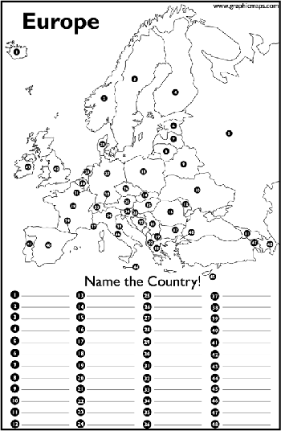

Od Srbije do Estonije: Novi mediji i nova Evropa
ponedeljek, 3. julij 2006. u 11:46 AM
Piše: La Lara
Rubrike: Creative Economy | Internet | Zdrav Stav
Pre pet godina, a oko godinu dana posle revolucije od 5. oktobra, u vreme koje mogu nazvati najoptimističnijim kada je politička situacija u zemlji u pitanju, dobila sam poziv da za Vreme napišem tekst. Radilo se o rubrici gde su različite ličnosti davale predloge za aktivnosti koje su im poznate, drage, podsticajne, zanimljive. Ja sam pisala: “Predlog za kampanju: Strategija za skeptične”, odnosno na temu ‘Evropa treba da se reklamira’. Preciznije govoreći, trebalo bi dodati: da se reklamira svakome na specifičan način. Kao što se to radi i sa drugim proizvodima, stratifikacija tržišta i slično. A najbolje na Internetu, svako dobija reklamu tačno prema temama koje ga interesuju.
U tekstu iz 2001. pisala sam: “Uprkos povremenim egzaltiranim naslovima u novinama, obično posle nekog od sastanaka domaćih zvaničnika sa evropskim diplomatama, koji tvrde da će Jugoslavija uskoro u Evropsku uniju, taj dan je još veoma daleko. Pitanje je, naravno, i da li će termin 'Jugoslavija' do tada biti aktuelan. Od širenja ideja nekada prisutnih u istim tim novinama ("Jugoslavija ponovo nosi baklju slobode u porobljenoj Evropi" ili "Evropska kuća na klimavim nogama") u proteklih godinu dana se odustalo. Napora da se principi, vrednosti i nedostaci evropske integracije bolje objasne, međutim, u medijima nema mnogo. Čast izuzecima. Evropska unija, za sada, ovde uglavnom figurira kao potencijalni donator, pomagač posrnule privrede, neuslovnih škola i bolnica, davalac jeftinijeg šećera. I to je nešto, naravno, ali neće potrajati. EU, jednostavno, nije raspoložena da bude svačiji bogati i dobri rođak iz inostranstva.”
U ostatku tekst predstavljena je pro-EU kampanja u Mađarskoj, ovde prenosim samo deo: “Mađarska vlada, uz pomoć EU-a, još od '96. sprovodi kampanju "Prodati EU Mađarima". Jer biti deo evropskih integracionih procesa, ma koliko bilo lepo i korisno, ima i svoju cenu. Nekima je potrebno malo zavodljive i sugestivne reklame, drugima uveravanje da uzimaju proizvod najvišeg kvaliteta, za koji ne postoji zamena. Mađarski stručnjaci odredili su najpre pet primarnih ciljnih grupa kampanje: 1. najveći potencijalni dobitnici priključenja EU-u – biznis elita; 2. najveći gubitnici – seosko stanovništvo; za njima slede oni koji će posebno imati veze sa EU-om ili uticati na njenu popularizaciju, to jest: 3. administracija; 4. mladi ljudi; 5. kreatori ideja i ideologija: nastavnici, medijski stručnjaci, istraživači.”
Zaključak tog teksta: “Smatrali mi da je Beograd veći Beč od Budimpešte ili ne, malo evropske reklame ne bi ni nama smetalo. Ovde skeptika nikad nije manjkalo.”
Šta se desilo posle toga?
Prvo, neposredno posle pojavio se slogan jedne strane banke koji je izrazito ličio na poslednju rečenicu mog teksta, uključujući tu parabolu Beograd-Budimpešta-Beč (Nešto tipa: Nije bitno da li je Beograd sličniji Beču nego Budimpešta, već…naša banka..). Nisam nikada saznala da li je to slučajnost.
Generalna situacija sa medijima se za pet godina pogoršala, a politički je takođe mnogo manje optimizma.
Politički tabloidi, nastali u poslednjih nekoliko godina, lansiraju stalne afere i brojne protivrečne neproverene i nemoderisane najteže optužbe jednih političkih aktera protiv drugih. Ostali mediji imaju brojne finansijske i profesionalne probleme.
O Evropi i Evropskoj uniji se dosta govori među političarima, privrednicima i u medijima, ali je opšti kvalitet izveštavanja o EU prilično nizak, a stratifikovana pro-EU kampanja ne postoji. Politički, saradnja sa Haškim tribunalom još uvek nije dovedena do kraja, što je jedan od preduslova za nastavak prekinutih pregovora o stabilizaciji i asocijaciji sa Evropskom unijom. Ni pitanje Kosova još uvek nije rešeno. Iako je prema ispitivanjima javnog mnjenja podrška članstvu u EU vrlo visoka, datum eventualnog ulaska sada Srbije u zajednicu evropskih naroda je još uvek veoma daleko. Iz iskustava zemalja koje su prošle kroz proces tranzicije i priključile se Evropskoj uniji u 2004. godini poznato je da se ta podrška smanjuje kako se proces priključenja dovodi do sve težih pitanja. Generalni skepticizam prema politici u zemlji je veoma visok, na šta utiču politička nestabilnost (u 2003. godini ubijen je prvi demokratski izabran, proreformski premijer, suđenje njegovim ubicama još uvek traje, uz pritiske i opstrukcije, u isto vreme jačaju radikalne političke opcije, mnogo je korupcionaških i drugih skandala), visoka je nezaposlenost, a nizak životni standard. Građani Srbije ne mogu da putuju skoro ni u jednu evropsku zemlju bez viza, a one se veoma teško dobijaju. Stanje u politici i medijima umanjuje spremnost na podršku neophodnim reformama, često teškim i zahtevnim. A one su neraskidivo vezane sa procesom evropskih integracija.
Da se vratim na navode iz teksta od pre pet godina: Jugoslavije se u međuvremenu (2003. godine) transformisala u labaviju zajednicu Srbije i Crne Gore, da bi se 2006. Crna Gora otcepila. Posrnula privreda je u boljem stanju nego pre pola decenije, a jeftiniji šećer se više ne dobija od Evropske unije. Škole i bolnice i dalje pomaže EU.
Dakle, sa jedne nedovoljno strane stručni, sa druge nedovoljno odgovorni, tek mediji pojačavaju evro skeptizam, sa kojim su se sretale i mnoge od novih članica EU. Ipak, pravi odnos medija prema reformama i razvoj novih medija na Internetu mogu izveštavanje o reformama i evropskim integracijama učiniti mnogo efikasnijim i efektnijim.
To ću prezentirati na primeru Estonije i njenih medija, kao i razmatranjem situacije i predlozima usmerenim ka popravljanju slike medija u Srbiji, i kreiranju novih medijskih strategija i novih (građanskih) medija.
***
Promene u estonskom društvu bile su brze i radikalne, ako se uporede sa većinom drugih zemalja u centralnoj Evropi tokom 90ih godina, piše profesor Peeter Vihalemm u svom tekstu “Changing Media in a Changing Society” (“Promena medija u društvu koje se menja”). Što je najvažnije, piše on dalje, politička klima u zemlji formirana je očekivanjem uspeha. Čak i rastuće nezadovoljstvo i razočarenje nekim od rezultata reformi krajem prethodne decenije nije moglo da pokvari generalnu optimističnu atmosferu.
Tokom prvog perioda tranzicije, estonski mediji igrali su važnu, čak odlučujuću ulogu u formiranju i učinku masovnog narodnog pokreta. Istraživanja iz tog perioda pokazuju zapanjujuću medijsku izloženost građana. Prema podacima odseka za novinarstvo Tartu univerziteta, prosečan građanin Estonije čitao je tada čak 12 različitih dnevnih novina ili časopisa.
Prema mišljenju različitih medijskih stručnjaka, u mnogim postkomunističkim zemljama došlo je do pluralizacije medija, ali oni nisu postali politički nezavisni. Slavko Splihal je taj fenomen nazvao 'Italijanizacijom medija.' Međutim, u Estoniji ovo nije bio slučaj. Novinari u Estoniji bili su relativno uspešni u odvajanju sebe i svog rada od državnih struktura i u dobijanju političke autonomije. To, ipak, ne znači, da nije bilo pokušaja države da izvrši indirektan pritisak.
Nakon 1991. godine I dobijanja nezavsnosti od Sovjetskog Saveza, kriterijumi po kojima su se medijski sadržaji birali brzo se promenio. Politika više nije bila tako privlačna, te su novinari nastojali da otkrivanjem političkih skandala i korupcije privuku pažnju publike.
Uopšte uzev, estonski mediji pomogli su u kreiranju radikalnih promena u društvu. Oni su promovisali pluralizam, konkurenciju u politici i ekonomiji, i podržavali ceo koncept šok terapije koji je sprovodila prva reformska Vlada. Estonski novinari su izrazito podržavali liberalizaciju i radikalne reforme (bar do 2000. godine), ne zato što su ih kontrolisali ili manipulisali političari te provenijencije, kao što neki misle, već zato što je liberalni koncept bio u skladu sa njihovim uverenjima i načelima. Jedan od osnovnih razloga za dominaciju liberalnog opredeljenja u estonskim medijima tokom 90-ih bila je brza generacijska smena koja se desila među novinarima. Ubrzo nakon demokratskih promena u zemlji , stariji novinari su se penzionisali ili našli poslove u drugim strukama, dok su na novinarske pozicije došli uglavnom mladi ljudi.
Zbog dominacije pro-reformskih liberalnih gledišta, slika u medijima tokom incijalnog perioda radikalnih reformi nije bila potpuno izbalansirana. Može se reći da mnoge velike društvene grupe nisu bile podjednako zastupljene u javnoj debati. Gubitnicima tranzicije nije dato mnogo mogućnosti da izraze svoje mišljenje. Na neki način, oni su bili marginalizovani kao ljudi koji nisu u stanju da urede svoj život u novonastalim okolnostima, odnosno koji su se suprotstavljali brzim promenama. Ipak, i većina građana je, sudeći prema istraživanjima s početka devedesetih, podržavala radikalne reforme, kao jedini siguran način da se izbegne ekonomski uticaj Rusije i postigne ekonomska stabilnost. Dok su se ruske trupe još uvek nalazile na teritoriji Estonije, bilo je lako stigmatizovati levičarske političare kao one koji podržavaju pro-moskovsku politiku.
Kako je prodaja reklamnog prostora postajala sve značajniji izvor prihoda za medije, njihovi sadržaji su se komercijalizovali, nekad na štetu profesionalnih novinarskih standarda. I pored toga, mediji su imali značajnu ulogu u prilagođavanju publike novom političkom i ekonomskom okruženju.
Kraj devedesetih doneo je novu odliku svetu komunikacija u Estoniji: Brzu ekspanziju Interneta. Prema različitim izvorima, Estonija je zemlja sa najvećim brojem građana koji koriste Internet u Centralnoj i Istočnoj Evropi. U jesen 2002. godine, procenat korisnika Interneta među Estoncima dostigao je 43 procenta, što je više nego u mnogim starim članicama EU. (Krajem 2005. godine procenata se popeo na blizu 50 posto).
Povećana upotreba novih medijskih tehnologija doprinela je daljoj fragmentaciji publike, ali je u isto vreme i stimulisala političku debatu. Online komentari vezani za politiku, EU debate i glasanja o vrućim temama uključili su u medijski život mlade ljude koji nikada nisu bili preterano raspoloženi da glasaju ili se uključe u politiku.
Ovaj novih medijski ambijent podstakao je političare da aktivno dostavljaju informacije o partijama i vladinim institucijama preko Internet sajtova. Zakon o Javnim informacijama iz 2000. godine značajno je doprineo razvoju elektronske javne sfere. Prema tom zakonu, sve javne institucije imaju obavezu da publikuju na web sajtovima sve zakonske odredbe i druge akte, kao i informacije o upotrebi javnih fondova i drugo.
***
U Srbiji, u vreme Miloševićeve vladavine, mediji koji su bili van kontrole vlasti nazivani su alternativnim ili nezavisnim. Njihov uticaj i tiraži rasli su tokom devedesetih, i u periodu koji je prethodio političkim promenama u zemlji svrstavani su među glavne nosioce procesa demokratizacije. Oni koji su bili kontrolisani, ličili su više na biltene neke ostrašćene zavereničke grupe, nego na medije. Nakon pada Miloševića, situacija se radikalno promenila. U prvi mah svi mediji su podržavali novoizbranu koaliciju DOS i optimistično pisali o reformama koje se sprovode i budućnosti zemlje. To je, međutim, trajalo kratko, koliko i jedinstvo pobedničke koalicije, kada se veliki deo medija opredelio da podržava jednu ili drugu grupu (Đinđićevu ili Koštuničinu). Bilo je, naravno, i izuzetaka, onih medija koji su nastojali da budu što objektivniji. Ipak, generalno govoreći, nakon negativnog iskustva sa periodom Miloševića i kontolom njegovog režima prema medijima, u novonastalim okolnostima mediji su se prikazali preterano kritičnim prema proreformskoj Đinđićevoj Vladi. Neki od medija su, postoje ubedljive indicije, bili pod uticajem političkih i kriminalnih struktura koje su kao cilj imale suprotstavljanje Đinđićevoj Vladi i potezima koje je ona preuzimala, u nekim oblastima (ekonomija, saradnja sa Haškim tribunalom – izručenje Miloševića) veoma hrabrim. Nova vlast, sa svoje strane, nije preduzela mnogo šta da bi regulisala nasleđeno haotično stanje u medijima. Kako za online medijski magazin iz Bosne i Hercegovine (www.mediaonline.ba) 2002. godine piše Vladan Radosavljević: “Ono što nesumnjivo najjasnije karakteriše stanje u medijskoj sferi Srbije u ovoj protekloj godini, jeste činjenica da vlast upadljivo izbegava da vodi bilo kakvu jasnu medijsku politiku, a mediji i javnost tolerišu status quo.” U međuvremenu su doneti neki od zakona koji bi trebalo da regulišu ovu sferu, među njima i Zakon o dostupnosti informacija od javnog značaja, ali postoje problemi u njihovoj primeni.
“U Srbiji novinari anketirani 2005. gotovo istim rečima kao u prethodnom istraživanju 2003. i sa puno negativnih emocija ocenjuju stanje novinarstva kao loše, katastrofalno, degradirano i poniženo, nikad gore. Opterećeni izrazito lošom materijalnom situacijom i nezadovoljavajućim statusom u društvu, naši sagovornici većinom naoko ravnodušno, a u osnovi sa indignacijom gledaju na sve uočene negativnosti koje prate novinarstvo u tranzicionoj Srbiji.” Ovo je deo ocene situacije u kojoj se nalaze mediji i novinari u Srbiji, iz istraživanja “Etika i novinarstvo u jugoistočnoj Evropi” (2005. godina) koji je inicirao Medija centar iz Beograda u saradnji sa srodnim institucijama u regionu i organizacijom South-East European Network for the Professionalization of the Media (SEENP).
Prvi politički tabloid u Srbiji, Nacional, zabranjen je tokom Vanrednog stanja koje je uvedeno nakon ubistva premijera Zorana Đinđića 2003. godine, “zbog kršenja naredbe o obaveštavanju za vreme vanrednog stanja i sumnje da su saradnici ili osnivači tog lista bili "u vezi sa kriminalnim klanom"”. (Politika, 20. mart 2003. godine). Međutim, nakon isteka vanrednog stanja, pa sve do danas, pojavljuju se stalno novi tabloidi, od kojih neki imaju vrlo veliku čitanost. Ove novine se većinom obraćaju žrtvama tranzicije, nezadovoljnima i razočaranim. Sadržaj im je politički, ali prezentiran estradno, sa ciljem da dramatizuje društvena i politička događanja. Koriste agresivnu retoriku i ne prezaju od toga da se služe izrazima i fotografijama koje prevazilaze granice dobrog ukusa.
***
Pošto se situacija sa tradicionalnim medijima u Srbiji neće tako brzo poraviti, i pošto su i mediji zemalja koje su već ušle u EU često problematično (parcijalno, bez punog razumevanja situacije, sa puno tehničkih podataka, a premalo primera i mogućnosti primene na svakodnevni život) izveštavali o procesu integracije u EU, vredelo bi razmišljati o novim načinima izveštavanja. Odnosno novim medijima.
Prema Den Gilmoru, osnivaču Centra za građansko novinarstvo (Center for Citizen Media) i autoru knjige 'Mi mediji', 'demokratizacija sredstava i raspodela novinarstva – ideja da se njime svako može baviti' jesu određujuće odlike medija za vreme koje je pred nama.
Ovakvi mediji su u Srbiji još uvek prilično nerazvijeni, kao što je još uvek slabo razvijena prava zastupljenost štampanih i elektronskih medija (televizije i radija) na Internetu. Takođe, pristup građana Internetu je još dosta nizak, oko 16 procenata, po različitim istraživanjima.
U svetu, u vreme svakodnevnog jačanja alternativnih online media, zvaničnim/komercijalnim medijima svih vrsta ne preostaje ništa drugo nego da i sami na što efikasniji, efektniji i inovativniji način ne samo predstave svoj rad na Internetu, nego i da stvore načine kako će kreirati i posebne Internet sadržaje, pored onih koje objavljuju u svojim štampanim ili elektronkim izdanjima. Isto tako, nalaze oblike uključivanja alternativnih medija u svoje delovanje i povezuju se sa blogovima, portalima, forumima, bilo onim već postojećim ili posebno za njih kreiranim.
Kada je reč o alternativnim web medijima u Srbiji, u što skorijoj budućnosti bilo bi dobro da se razvijaju na zanimljive način predstavljene teme vezane za kulturu, životnu sredinu, lokalne zajednice, marginalne grupe i nove tehnologije i sve ono što ljude interesuje i nije dovoljno pokriveno tradicionalnim i komercijalnim medijima. Među tim temama, svakako bi trebalo da bude i tema evropskih integracija, koja je, u suštini, skup svih ovih tzv. malih tema, zajedno sa onim koje se najčešće pominju, kao što su politika, ekonomija, zakonodavstvo. Kao što je i skup onoga što građani o njoj imaju da kažu i što bi moglo vrlo efikasno biti artikulisano kroz on-line medije, koji još nemaju toliki pritisak ekonomskih i političkih faktora.
Možda to deluje suviše apstraktno? Tako u Srbiji deluje i Estonija. Čak i oni najinformisaniji na pitanje šta o toj zemlji znaju, odgovaraju mi: ‘Bivsa republika SSSR-a, mozda negde na severu’, ili ‘mislim da je Talin glavni grad, ili nije...’. Uprkos tome, Estonija je već dve godine članica Evropske unije, kojoj velika većina građana Srbije teži, i u informatičkom pogledu jedna od evropskih velesila. Čak je i Skype, sredstvo koje se i među Srbima u zemlji i dijaspori toliko koristi za razgovor preko Interneta, napravljen u Estoniji.
U građanskom novinarstvu (civic journalism) je danas moguće doći i do sredstava za poslovanje, možda čak i zarade. Prvo, moguće je staviti reklame – one vezane za sadržaj ili klasične banere. Ili, kao što je slučaj sa sajtom Enthusiast Group (http://www.enthusiastgroup.com), koja je namenjen zaljubenicima u sport i rekreaciju, mogu se naći investitori. Ova grupa ih je našla 11, saopšteno je u maju ove godine. Steve Outing, osnivač sajta, naveo je tom prilikom: ‘Samo sportske zvezde dobijaju medijsku pažnju. Ali sportisti i rekreativci oko nas takođe zaslužuju pažnju.’ I to je ono čime se bavi njegov sajt i u šta su investitori uložili svoj novac. A ovakvih, malih i velikih tema, ima mnogo, koliko može biti i (on-line) medija, odnosno sajtova i blogova, koji se njima bave. Na isti takav način se mogu efektno i stalno obrađivati i sve teme vezane za Evropsku uniju i evropske integracije, jer tako Evropa postaje ( ne samo u Srbiji) ono što njeni građani od nje naprave i kakvom je opišu i isprojektuju za budućnost.
update
Vise o medijima na mom medijskom blogu - Media Mix
Nisam bas celo procitao, ali ovo je bre mnogo ozbijno i dobro ;)
 RSS feed
RSS feed
 sadržaji se objavljuju pod
sadržaji se objavljuju pod
tek sad videh ovo, zahvaljujuci onim linkovima sa recima sto ste stavili.
tekst je bas dobar.
tekton | 18.10.06 14:35